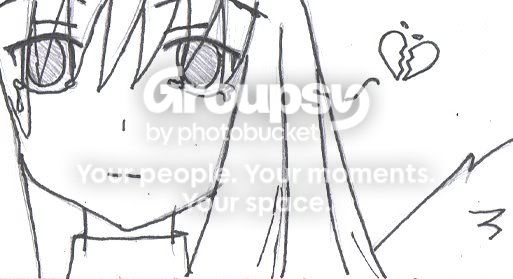

ข้อความเหล่านี้คือการสปอยล์คำพูดของเหล่าเนโกะมาตะที่กำลังชมดอกซากุระ...ถ้าใครยังไม่ได้ไปลองทำหรือว่าไม่อยากรู้รายละเอียดก่อน ห้ามอ่านเด็ดขาด!!!
จาก...[url=http://board.onenet.co.th/viewtopic.php?t=50249]~ECO ตามหาซากุระ จุ๊บุ จุ๊บุ~ เริ่ม 14 - 28 พ.ค. นี้
[/url]
[GM]Icy เขียน:
5. นอกจากร้านรวงต่างๆ จาก NPC สุดพิเศษแล้ว เรายังมีไอเทมกุ๊กกิ๊กสุดเริ่ดที่มีเฉพาะเทศกาลนี้มาฝากอีกด้วย นั่นก็คือMochi and Greentea Set
ชุดเซ็ตขนมโมจิ + น้ำชา ไว้ตกแต่งบ้าน Flying Garden นั่นเอง!!
ถ้าอยากได้ไม่ต้องวิ่งหา NPC ให้เมื่อยตุ้ม แค่พกพาเหล่าแมวน้อย "เนโกะมาตะ" เข้ามาร่วมชมซากุระที่แมพ
Farmer s Farm แห่งนี้ แล้วลองปล่อยให้พวกเค้าคุยกันดูนะ ^^

จากที่ผ่านมาเรา..~Zabertus~ หรือที่คนอื่นรู้จักกันในนาม เฟียร์ ได้ให้ความสนใจที่จะศึกษาเนื้อเรื่องภายในเกมส์ ECO รวมไปถึงข้อมูลของเหล่า ''เนโกะมาตะ''
โดยเฉพาะรายละเอียดของกิจกรรมที่ 5 ทำให้เรารู้สึกสนใจไม่น้อยที่จะลองศึกษาข้อมูลเหล่านี้ดู แต่ว่าถ้าใครมาอ่านอาจจะรู้สึกว่าเป็นการสปอยล์คำพูด...เพราะฉะนั้น...
ข้อความเหล่านี้คือการสปอยล์คำพูดของเหล่าเนโกะมาตะที่กำลังชมดอกซากุระ...ถ้าใครยังไม่ได้ไปลองทำหรือว่าไม่อยากรู้รายละเอียดก่อน ห้ามอ่านเด็ดขาด!!! (รอบสอง)
ขอเริ่มกันที่วิธีทำ...การเอาเซ็ตน้ำชาสำหรับตกแต่งฟลายอิ้งการ์เด้น......
ของที่ต้องใช้ - เนโกะมาตะสุมิเระ(Sumire), เนโกะมาตะไอ(Ai) [อาจจะติดเนโกะตัวอื่นๆไปด้วยเพราะว่าจะมีบทพูดของเนโกะมาตะตัวอื่นเสริม]
**เนโกะมาตะอันสึ (Anzu) จะไม่มีการพูดถึงในเทศกาลนี้**
1) เดินทางไปที่แผนที่ Fareast Highway
2) คุยกับ NPC ที่เป็นสาวชาวนาที่ชื่อว่า Farmer's Farm Worker
3) เธอจะกล่าวถึงสถานที่ที่สามารถชมซากุระได้ง่าย (ซึ่งก็คือแมพ Farmer Farm) ซึ่งพอเธออธิบายเสร็จจะมีตัวเลือก ให้เราเลือกข้อ 1 ซึ่งก็คือ ลองไปดู!
4) เราจะมาโผล่ที่แมพ Farmer Farm
5) ติดตั้งเนโกะมาตะสุมิเระ (ต้องมีเนโกะมาตะไออยู่ในตัวไม่อย่างนั้นจะไม่ได้ชุดน้ำชา)
6) เดินมาทางใต้ของร้านขายของ จะมีรั้วขนาบข้าง ซึ่งก็คือตำแหน่งที่อยู่ในสี่เหลี่ยมสีแดงดังรูป (เอาตำแหน่งของผู้หญิงในกรอบสีแดงเป็นเกณฑ์ก็ได้) พอเดินเข้าไปในนั้นจะมีข้อความขึ้นมาว่า ''ลองฟังพวก Nekomata พูดคุยกันมั้ย?'' แน่นอน ให้เลือก ''ฟัง''


''ดอกซากุระ(Sakura)นี่สวยมากเลยล่ะ...รู้สึกดีเหมือนกันที่ได้มาดูดอกซากุระ จะได้เปลี่ยนบรรยากาศเสียบ้าง'' สุมิเระแมวสาวพี่ใหญ่ของเหล่าเนโกะมาตะพูดขึ้น

''ไอ ไอ มาดูด้วยกันสิ '' เธอเรียกน้องสาวของเธอที่เป็นเนโกะมาตะสีฟ้า ที่ดูน่ารักและดูท่าทางไร้เดียงสา

''พี่สุมิเระ.......ดอกซากุระนี่..สวยจังเลยค่ะ''

ไอเหม่อลอยจ้องมองดูดอกซากุระที่เป็นสีชมพูที่พัดปลิวไสวไปตามสายลมราวกับพวกมันกำลังเริงระบำอยู่กลางอากาศ

''ถ้าอย่างนั้นก็พักกันที่นี่ก่อนไหม? นี่ฉันทำมาให้กินด้วยนะ'' จากนั้นสุมิเระก็หยิบกล่องข้าวขึ้นมาพร้อมกับเปิดฝากล่องเผยให้เห็นขนมสีขาวๆลูกเล็กๆที่ส่งกลิ่นหอมกรุ่นชวนน่ารับประทาน

''ว้าว ซากุระโมจิ (Sakura Mochi) ของพี่สุมิเระ น่าทานจังเลยค่ะ'' แต่ก่อนที่เธอจะทานเธอนึกขึ้นได้ว่า...

''ถ้าอย่างนั้น เดี๋ยวหนูจะเตรียมน้ำชาให้...รอสักครู่นะคะ'' จากนั้นไอก็ไปจัดแจงเตรียมชุดชงชาที่เธอพกมาด้วยควมเร่งรีบเพื่อไม่ให้เป็นการเสียมารยาทพวกพี่สาวที่กำลังรอคอย

สุมิเระมองดูน้องสาวของตนในขณะที่กำลังครุ่นคิดอะไรบางอย่าง...จากนั้นเธอจึงพูดออกมา

''พวกเราพี่น้องต่างก็แยกย้ายกันไป ไม่มีเวลามาดื่มชานั่งคุยด้วยกันแบบนี้บ่อยนัก''

''การที่พวกเรามารวมตัวกันได้แบบนี้อีกครั้ง..'' เธอเว้นไปสักพัก ''...ถ้าเป็นแบบนี้อีกคงจะเป็นช่วงเวลาที่มีความสุขมาก''

''ต้องขอขอบคุณน้องๆทุกคนมากจริงนะ'' เธอพูดพลางนึกถึงอดีตที่ต้องพลัดพรากจากกัน .......

''พี่ได้ดูแลน้องๆทุกคน...แต่ก็.....'' จากนั้นเธอจึงพูดต่อ ''อยากให้น้องๆทุกคนได้ดูแลสุขภาพด้วยตัวเองอีกด้วย'' ในใจของเธออยากจะปกป้องน้องๆเหล่านี้ไปตลอด แต่ว่าในอีกมุมหนึ่ง เธอก็อยากจะให้น้องๆของเธอมีความเข้มแข็งและสามารถใช้ชีวิตได้ตามลำพัง แต่ดูเหมือนคำพูดนั้นจะทำให้ไอที่กำลังจัดเตรียมน้ำชาอยู่ตกใจมาก

''พี่...พี่สุมิเระพูดแบบนั้น หมายความว่าพี่จะทิ้งพวกเราไปไหนอย่างนั้นเหรอคะ....'' ไอเริ่มมีน้ำตาคลอเบ้า
''ถ้าพี่สุมิเระไม่อยู่...ฉัน........ฮือ..ฮือ''

''ไอ?? อย่าพึ่งเข้าใจผิดสิ มันไม่ใช่อย่างนั้น'' สุมิเระรีบปฏิเสธ

''น้องๆทุกคนน่ะมีความหมายกับพี่มาก...พี่จะจากน้องไปไหนตามใจชอบได้ยังไงกันล่ะ'' เธอลอยเข้าไปหาไอก่อนจะโอบกอดเธอพร้อกับลูบหัวด้วยความอ่อนโยน

''...ถ้าพี่จากน้องๆไป ก็มีแต่จะยิ่งเป็นห่วง''

''..พี่....ฮือ...'' ไอร้องไห้ทั้งๆที่อยู่ในอ้อมอกของพี่สาวตนเอง

''ไอนี่ยัง เจ้าน้ำตาไม่เปลี่ยนเลยนะ'' สุมิเระพูดอย่างแผ่วเบา ...

''หืม? ไอจังมีอะไรเหรอ'' เนโกะมาตะสีชมพูที่ชื่อว่า ''โมโมะ'' ลอยเข้ามาถาม

''เอ๋ ร้องไห้เหรอ'' เนโกะมาตะในชุดสีเหลืองแถบเขียว ''ยามาบูกิ'' ลอยเข้ามาดูใกล้ๆพูดขึ้น

''นี่กำลังร้องไห้อยู่เหรอเนี่ย ไอ นี่ขี้แยจังนะ'' เนโกะมาตะสีแดง มัดผมทรงทวินเทล หน้าตาแก่นแก้วที่ชื่อ ''อากาเนะ'' บอกซ้ำ และจากการที่มีพี่น้องเนโกะมาตะสามคนมามุงดูทำให้ไอเผลอละอกจากสุมิเระออกมาปฏิเสธทันควัน

''ไม่ใช่อย่างนั้นซะหน่อย...ก็แค่ดอกซากุระแถวนี้มันสวยมากน่ะ..เลยประทับใจจนน้ำตามันไหลออกมาโดยบังเอิญน่ะ'' จากนั้น ไอจึงจ้องมองไปยังดอกซากุระที่กำลังโปรยปราย....สายลมแห่งฤดูใบไม้ผลิ...
บัดนี้...ได้พัดพาความทรงจำอันเลวร้ายให้ผ่านพ้นไปแล้ว

''ไอ....เตรียมชาไว้นานแล้ว...ป่านนี้คงดื่มได้แล้วล่ะ'' คำพูดของสุมิเระทำให้ไอรู้สึกตัว...ไอจึงจัดการเทน้ำชาให้พี่น้องเนโกะมาตะของเธอ

โมโมะร้องเพลงไปชมซากุระไปด้วยความร่าเริง

''ชาของไอนี่อร่อยจริงๆ' ยามาบูกิชม

(ความรู้สึกที่เก็บซ่อนอยู่ในความหมายมันคืออะไรน้า) อากาเนะมองต้นซากุระพลางคิดอะไรบางอย่างในใจ จนไม่ได้สนใจขนมและน้ำชาเบื้องหน้า

''อากาเนะ ถ้าไม่กิน เดี๋ยวพวกพี่ๆน้องๆเขากินกันจนหมดเลยนะ'' สุมิเระกล่าวเตือนอากาเนะด้วยสีหน้ายิ้มแย้มด้วยความหวังดี ซึ่งเธอรู้ดีว่าขืนปล่อยเอาไว้มีหวังพวกพี่น้องของเธอแย่งไปกินหมด พูดยังไม่ทันขาดคำยามาบูกิก็กำลังเอื้อมหยิบซากุระโมจิในส่วนของอากาเนะแล้ว อากาเนะเห็นดังนั้น

''อ๊า!! ไม่ได้นะ ฉันเหลือไว้กินคราหน้าต่างหากเล่า!!'' อากาเนะจึงรีบแย่งซากุระโมจิแล้วยัดมันเข้าปากทันทีก่อนจะเกิดศึกแย่งชิงขนม
และในระหว่างนั้นเอง

''ไอ..เอาชาให้นายท่านด้วยสิ'' สุมิเระบอกกับไอ ดูเหมือนเธอเกือบจะลืมคนสำคัญที่รองจากเหล่าน้องๆเนโกะมาตะเสียแล้ว

ไอรับคำก่อนที่จะจัดแจงชุดน้ำชาพร้อมกับซากุระโมจิใน 3 ก้อนลงในจาน เธอยกมันไป 'นายท่าน'

''นี่เป็นซากุระโมจิที่พี่สุมิเระทำกับ น้ำชาที่ฉันเอ่อ..ชงขึ้นมาค่ะ'' ไอพูดด้วยน้ำเสียงอายๆพร้อมกับส่งมันให้นายท่าน ดูเหมือนเขา(เธอ)จะยังนิ่งเงียบ ทำให้ไอรู้สึกประหม่าไม่น้อยจึงก้มหน้าลงแต่เธอก็รู้สึกว่ามีฝ่ามือบางอย่างลูบหัวของเธออย่างอ่อนโยน
''ขอบใจนะ''


ไอลอยไปหาเหล่าพี่น้องเนโกะมาตะของเธอที่กำลังครึกครื้นอยู่ใต้ต้นซากุระ....
ฉันมองไปยังสุดขอบฟ้าไกล มองผ่านหมู่ซากุระที่กำลังเริงระบำอยู่ในสายลมแห่งฤดูใบไม้ผลิ....เหล่าเนโกะมาตะนั้นฝากชีวิตไว้กับฉัน.....
ฉันขอสัญญา......
จะทำหน้าที่ของ 'นายท่าน' ให้ดีที่สุด
--------------------------------------------------------------------------------------------------------------------------------------------
แปะรูปเสริมส่งท้าย......เทศกาลชมดอกไม้
(แอบติดใครด้วยก็ไม่รู้ หึหึ)

ใครบ้างเอ่ย หุหุ.....

ร่วมกันชม มินิซากุระจ้า
ความจริงแล้วบทพูดของเนโกะมาตะยังไม่หมดเพียงเท่านี้นะ แนะนำลองติดตั้งเนโกะมาตะตัวอื่นแล้วไปคุยดูจะพบว่าพวกเธอจะพูดไม่เหมือนกัน (บางตัวอ่านแล้วขำมาก) เดี๋ยวจะมานำเสนอใหม่น้า
ทิ้งท้าย เตรียมพบกับตอนจบของ ECO แบบที่ 2 เร็วๆนี้

